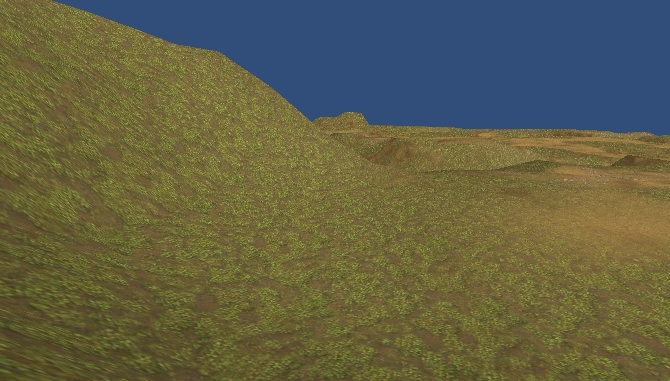
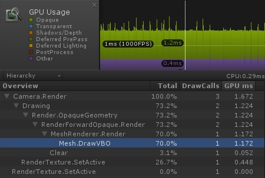
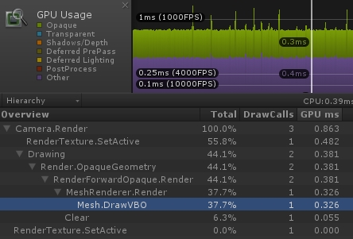
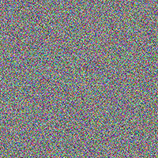
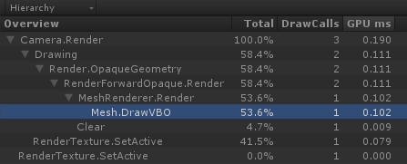
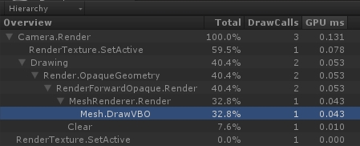

纹理采样
2017-3-1
压缩的纹理格式在显存中是以块（Block）的形式存在的，也就是说显示上相邻的像素在显存中也是相邻的。这样 GPU 就能迅速的将块加载到 Cache 中，并对块进行解码，解码一个块即得到多个 texel 数据（数据的多少由块的大小决定）。如果 GPU在一个时钟周期可以有能力加载并解码多个块，就能将更多的数据存放到 Cache 中，让缓存更多的命中。
GPU 被设计为这种策略其实是对绝大多数情况的一个假设性优化。光栅化后的 fragment 的执行顺序并不是随机的，不同的 GPU 会有不同的执行顺序，但都是以块（Block）为单位（块的大小由 GPU 的运算能力决定）。相邻的 fragment 被归在一个块内，同一个块内的每个 fragment 中的指令是以完全同步的方式一条条执行的（如果有动态分支，并且执行了不同分支，那么相同块中的所有 fragment 就不能完全同步一条条执行指令了）。所以对于同一个块内相邻 fragment 的纹理采样，并不需要每次都从显存中加载纹理数据并解压，因为数据已经在 Cache 中，所以直接读取即可。非同一个块内，相邻的 fragment 纹理采样也能享受到 Cache 带来的好处。这样大大提高了纹理采样的效率。我们可以认为 Cache 是 GPU 核心内部的一块高速缓冲，所以和 GPU 交换数据速度非常快，远远快于 GPU 直接从显存读取数据。
之所以说其是一种假设性优化，因为这种策略并不能适用于所有情况。当采样纹理 texel 不在 Cache 中时，称为 Cache Missing，上述方法可以将 Cache Missing 降低到比较小的值，当出现 Cache Missing 时，GPU 只能从显存中读取数据了。在下面的两个案例中，故意违反这种 Cache 策略，以此来看下性能的开销。
Case 1

渲染一个 8 千面的地形，采用多层纹理按权重叠加的方式。

从 Profile 上可以看到，GPU 的开销为 1.172 毫秒。

开启纹理的 Mipmaps。GPU 开销降到了 0.326 毫秒。
为什么是否开启 Mipmaps 会对开销有如此大的影响，其实和上文说的 Cache 策略有关。在这个案例中，地形的 Tiling 为 60，并且未开启 Mipmaps，由于透视关系和光栅化，fragment 对纹理的采样并不是连续的，而是跳跃的，这就造成了 Cache Missing，远处地形相比近处更是如此。而开启 Mipmaps 后，就能大大缓解这种情况，因为对于远处的地形会使用 Level 更大的 Mipmaps，这些 Mipmaps 的尺寸本身就很小，更容易被缓存命中，所以性能大大提升了。同理，如果不开启 Mipmaps，而是将 Tiling 设置为较小的值，开销也会显著下降。
Case 2
渲染一个 Quad 平铺整个屏幕。
fixed4 frag (v2f i) : SV_Target
{
fixed4 rnd = tex2D(_RndTex, i.uv);
fixed4 col = tex2D(_MainTex, i.uv + rnd.rg);
return col;
}
在 fragment 中并没有直接使用应用程序传入的 uv 值对 _MainTex 进行采样，而是让 uv 叠加一个随机量（rnd），随机量（rnd）来自于另一张纹理 _RndTex。

_RndTex

第一个 Profile，使用的 _RndTex 是上面的随机噪点纹理。第二个 Profile，使用的 _RndTex 是一张纯色的纹理。
上图两个 Profile 中的时间开销相差一倍，这也是 Cache Missing 造成的。
通过以上分析，纹理采样这种不起眼的地方，如果一时疏忽也会存在很大的开销，优化时需要密切关注。
References：
performance issue on texture bandwidth
How bad are small triangles on GPU and why?
When a GPU samples a texture, how does it pick which mipmap level to read from?